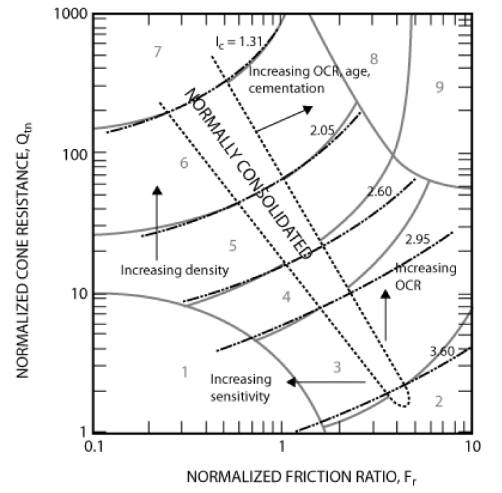

geolib_plus.robertson_cpt_interpretation package¶
Submodules¶
geolib_plus.robertson_cpt_interpretation.robertson_cpt_interpretation module¶
- class geolib_plus.robertson_cpt_interpretation.robertson_cpt_interpretation.OCRMethod(value)¶
Bases:
IntEnumAn enumeration.
- MAYNE = 2¶
- ROBERTSON = 1¶
- class geolib_plus.robertson_cpt_interpretation.robertson_cpt_interpretation.RelativeDensityMethod(value)¶
Bases:
IntEnumAn enumeration.
- BALDI = 1¶
- KULHAWY = 2¶
- KULHAWY_SIMPLE = 3¶
- class geolib_plus.robertson_cpt_interpretation.robertson_cpt_interpretation.RobertsonCptInterpretation(*, unitweightmethod: UnitWeightMethod = UnitWeightMethod.ROBERTSON, ocrmethod: OCRMethod = OCRMethod.ROBERTSON, shearwavevelocitymethod: ShearWaveVelocityMethod = ShearWaveVelocityMethod.ROBERTSON, relativedensitymethod: RelativeDensityMethod = RelativeDensityMethod.BALDI, data: AbstractCPT = None, gamma: Iterable = [], polygons: Iterable = [], path_to_water_level_file: Union[str, Path] = PosixPath('/home/runner/work/GEOLib-Plus/GEOLib-Plus/geolib_plus/robertson_cpt_interpretation/resources'), name_water_level_file: str = 'peilgebieden_jp_250m.nc', user_defined_water_level: bool = False)¶
Bases:
AbstractInterpretationMethod,BaseModelRobertson soil classification.
Classification of soils according to Robertson chart.
 - IC_calc()¶
IC, following Robertson and Cabal [1].
\[I_{c} = \left[ \left(3.47 - \log\left(Q_{tn}\right) \right)^{2} + \left(\log\left(F_{r}\right) + 1.22 \right)^{2} \right]^{0.5}\]
- NEN_calc()¶
Computes the consistency according to the NEN 997-1:2016
The NEN method is based on the tip resistance.
- static calculate_corrected_depth(penetration_length: Iterable, inclination: Iterable)¶
Correct the penetration length with the inclination angle
- Parameters:
penetration_length – measured penetration length
inclination – measured inclination of the cone
- Returns:
corrected depth
- damp_calc(method: OCRMethod = OCRMethod.MAYNE, d_min: float = 2, Cu: float = 2.0, D50: float = 0.2, Ip: float = 40.0, freq: float = 1.0)¶
Damping calculation.
For clays and peats, the damping is assumed as the minimum damping following Darendeli [2].
\[D_{min} = \left(0.8005 + 0.0129 \cdot PI \cdot OCR^{-0.1069} \right) \cdot \sigma_{v0}'^{-0.2889} \cdot \left[ 1 + 0.2919 \ln \left( freq \right) \right]\]The OCR can be computed according to Mayne [3] or Robertson and Cabal [1].
\[ \begin{align}\begin{aligned}OCR_{Mayne} = 0.33 \cdot \frac{q_{t} - \sigma_{v0}}{\sigma_{v0}'}\\OCR_{Rob} = 0.25 \left(Q_{t}\right)^{1.25}\end{aligned}\end{align} \]For sand the damping is assumed as the minimum damping following Menq :cite`menq_2003`.
\[D_{min} = 0.55 \cdot C_{u}^{0.1} \cdot d_{50}^{-0.3} \cdot \left(\frac{\sigma'_{v}}{p_{a}} \right)^-0.08\]:param : :type : param method: (optional) Method for calculation of OCR. Default is Mayne :param : :type : param d_min: (optional) Minimum damping. Default is 2% :param : :type : param Cu: (optional) Coefficient of uniformity. Default is 2.0 :param : :type : param D50: (optional) Median grain size. Default is 0.2 mm :param : :type : param Ip: (optional) Plasticity index. Default is 40 :param : :type : param freq: (optional) Frequency. Default is 1 Hz
- data: AbstractCPT¶
- filter(lithologies: List[str] = [''], key='', value: float = 0)¶
Filters the values of the CPT object. The filter removes the index of the object for the defined lithologies, where the key is smaller than the value The filter only removes the first consecutive samples.
- Parameters:
lithologies – list of lithologies to be filtered
key – Key of the object to be filtered
value – value of the key to be limited
- Returns:
- gamma: Iterable¶
- gamma_calc(method: UnitWeightMethod = UnitWeightMethod.ROBERTSON, gamma_min: float = 10.5, gamma_max: float = 22)¶
Computes unit weight.
Computes the unit weight following Robertson and Cabal [1]. If unit weight is infinity, it is set to gamma_limit. The formula for unit weight is:
\[\gamma = (0.27 \log(R_{f}) + 0.36 \log\left(\frac{q_{t}}{Pa}\right) + 1.236) * \gamma_{w}\]Alternative method of Lengkeek et al. [4]:
\[\gamma = \gamma_{sat,ref} - \beta \left( \frac{\log \left( \frac{q_{t,ref}}{q_{t}} \right)}{\log \left(\frac{R_{f,ref}}{R_{f}}\right)} \right)\]:param : :type : param method: (optional) Method to compute unit weight. Default is Robertson :param : :type : param gamma_max: (optional) Maximum gamma. Default is 22 :param : :type : param gamma_min: (optional) Minimum gamma. Default is 10.5
- interpret(data: AbstractCPT)¶
Function that interprets the cpt inputs. Lithology for each layer is determined according to the robertson’s method. Note that the pre_process method should be run before the interpret method.
- lithology(Qtn: Iterable, Fr: Iterable)¶
Identifies lithology of CPT points, following Robertson and Cabal [1].
:param : :type : return: lithology array, Qtn, Fr
- lithology_calc()¶
Lithology calculation.
- Parameters:
soil_classification – shape file with soil classification
- name_water_level_file: str¶
- norm_calc(n_method: bool = False)¶
normalisation of qc and friction into Qtn and Fr, following Robertson and Cabal [1].
\[ \begin{align}\begin{aligned}Q_{tn} = \left(\frac{q_{t} - \sigma_{v0}}{Pa} \right) \left(\frac{Pa}{\sigma_{v0}'}\right)^{n}\\F_{r} = \frac{f_{s}}{q_{t}-\sigma_{v0}} \cdot 100\end{aligned}\end{align} \]:param : :type : param n_method: (optional) parameter n stress exponent. Default is n computed in an iterative way.
- norm_cone_resistance_clean_sand_calc()¶
Calculates the clean sand equivalent normalised cone resistance, following Robertson and Cabal [1].
\[Q_{tn,cs} = K_{c} \cdot Q_{tn}\]Where K_{c} is defined as follows:
When [$I_{c} leq 1.64$]
\[K_{c} = 1.0\]When [$1.64 < I_{c} leq 2.5$]
\[K_{c} = 5.58 I_{c}^{3} - 0.403 I_{c}^{4} - 21.63 I_{c}^{2} + 33.65 I_{c} - 17.88\]When [$1.64 < I_{c} <2.36$] and [$F_{r} < 0.5%$]
\[K_{c} = 1.0\]When [$2.5 < I_{c} <2.7$]
\[K_{c} = 6 * 10^{-7} ( I_{c}^{16.76}\]
- path_to_water_level_file: Union[str, Path]¶
- permeability_calc()¶
Permeability calculation. Following Robertson [1].
When [$1.0 < I_{c} leq 3.27$]
\[k = 10^{0.952-3.04 I_{c}}\]When [$3.27 < I_{c} < 4.0$]
\[k = 10^{-4.52-1.37 I_{c}}\]
- polygons: Iterable¶
- pwp_level_calc()¶
Computes the estimated pwp level for the cpt coordinate. If the user has not defined a pwp in the cpt class.
- qt_calc()¶
Corrected cone resistance, following Robertson and Cabal [1].
\[q_{t} = q_{c} + u_{2} \left( 1 - a\right)\]
- relative_density_calc(method: RelativeDensityMethod = RelativeDensityMethod.BALDI, c_0: Union[ndarray, float] = 15.7, c_2: Union[ndarray, float] = 2.41, Q_c: Union[ndarray, float] = 1, OCR: Union[ndarray, float] = 1, age: Union[ndarray, float] = 1000)¶
Computes relative density. Following methods described in Robertson [1]. This method calculates the relative density for all the non cohesive soils along the whole cpt, i.e. RD is calculated when the lithology index is either 6, 7, 8 or 9.
The relative density can be computed according to Baldi [5] or Kulhawy and Mayne [6]. Furthermore Kulhawy method can be simplified for most young, uncemented-based sands.
\[RD_{Baldi} = (\frac{1}{C_{2}})LN(\frac{Q_{cn}}{C_{0}})\]\[RD_{Kulhawy}^{2} = \frac{Q_{cn}}{305 Q_{c} Q_{ocr} Q_{A}}\]\[Q_{ocr} = OCR^{0.18}\]\[Q_{A} = 1.2 + 0.05log(age/100)\]\[RD_{Kulhawy_simple}^{2} = \frac{Q_{tn}}{350}\]- Parameters:
method – Method for calculation of relative density.
c_0 – (optional float or np array) soil constant for Baldi method. Default is 15.7
c_2 – (optional float or np array) soil constant for Baldi method. Default is 2.41
Q_c – (optional float or np array) compressibility factor, 0.9 for low compressibility, 1.1 for high compressibility. Default is 1.0
OCR – (optional float or np array) Over consolidation ratio. Default = 1.0
age – (optional float or np array) age of the soil in years. Default is 1000
- relativedensitymethod: RelativeDensityMethod¶
- rho_calc()¶
Computes density of soil.
The formula for density is:
\[\rho = \frac{\gamma}{g}\]
- shearwavevelocitymethod: ShearWaveVelocityMethod¶
- soil_types(path_shapefile: Path = PosixPath('resources'), model_name: str = 'Robertson')¶
Function that read shapes from shape file and passes them as Polygons.
- Parameters:
path_shapefile – Path to the shapefile
model_name – Name of model and shapefile
- Returns:
list of the polygons defining the soil types
- state_parameter_calc()¶
Calculates state parameter from relationship with clean sand equivalent normalised cone resistance [7].
\[\psi =0.56 - 0.33 log(Q_{tn,cs})\]
- stress_calc()¶
Computes total and effective stress
- unitweightmethod: UnitWeightMethod¶
- user_defined_water_level: bool¶
- vs_calc(method: ShearWaveVelocityMethod = ShearWaveVelocityMethod.ROBERTSON)¶
Shear wave velocity and shear modulus. The following methods are available:
Robertson and Cabal [1]:
\[ \begin{align}\begin{aligned}v_{s} = \left( \alpha_{vs} \cdot \frac{q_{t} - \sigma_{v0}}{Pa} \right)^{0.5}\\\alpha_{vs} = 10^{0.55 I_{c} + 1.68}\\G_{0} = \frac{\gamma}{g} \cdot v_{s}^{2}\end{aligned}\end{align} \]Mayne [3]:
\[ \begin{align}\begin{aligned}v_{s} = e^{\frac{\gamma_{sat} + 4.03}{4.17}} \cdot \left( \frac{\sigma_{v0}'}{\sigma_{atm}} \right)^{0.25}\\v_{s} = 118.8 \cdot \log \left(f_{s} \right) + 18.5\end{aligned}\end{align} \]Andrus et al. [8]:
\[ \begin{align}\begin{aligned}v_{s} = 2.27 \cdot q_{t}^{0.412} \cdot I_{c}^{0.989} \cdot D^{0.033} \cdot ASF (Holocene)\\v_{s} = 2.62 \cdot q_{t}^{0.395} \cdot I_{c}^{0.912} \cdot D^{0.124} \cdot SF (Pleistocene)\end{aligned}\end{align} \]Zhang and Tong [9]:
\[v_{s} = 10.915 \cdot q_{t}^{0.317} \cdot I_{c}^{0.210} \cdot D^{0.057} \cdot SF^{a} (Holocene)\]Ahmed [10]:
\[v_{s} = 1000 \cdot e^{-0.887 \cdot I_{c}} \cdot \left( \left(1 + 0.443 \cdot F_{r} \right) \cdot \left(\frac{\sigma'_{v}}{p_{a}} \right) \cdot \left(\frac{\gamma_{w}}{\gamma} \right) \right)^{0.5}\]
- young_calc()¶
Young modulus calculation.
Computes the Young modulus:
\[E = 2 \cdot G (1 + \mu)\]

{kind=link}